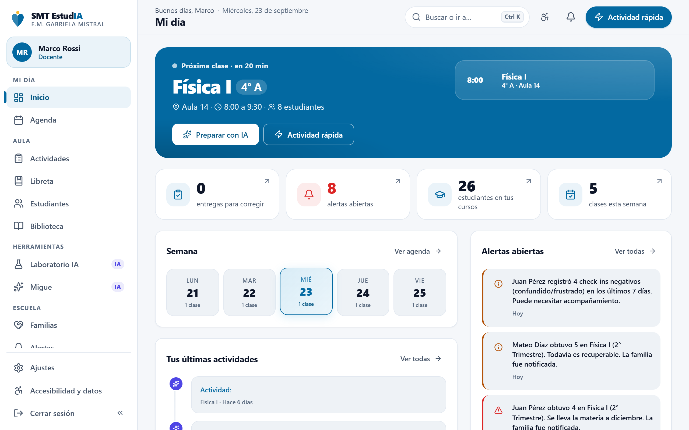
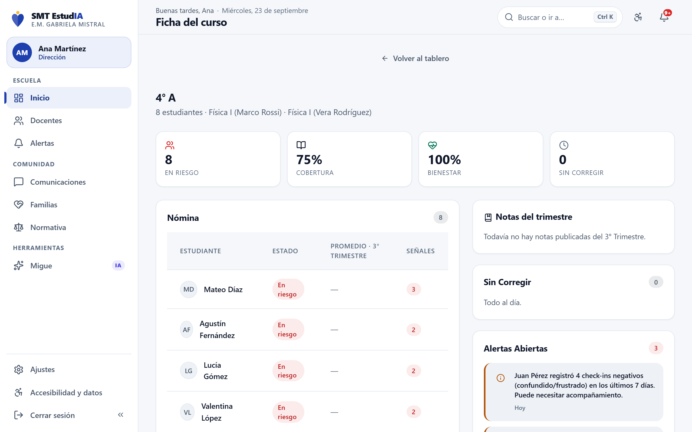
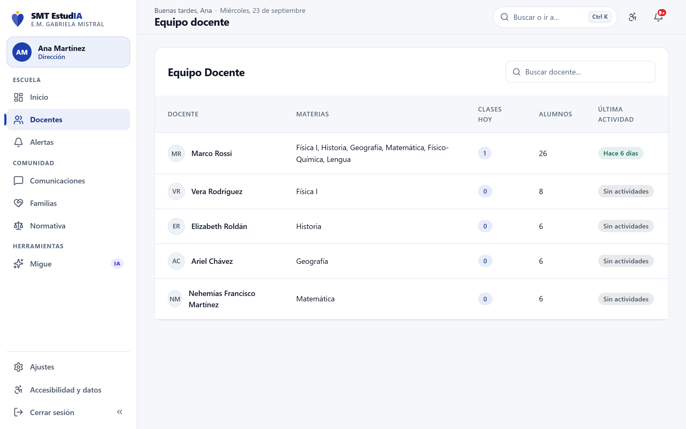
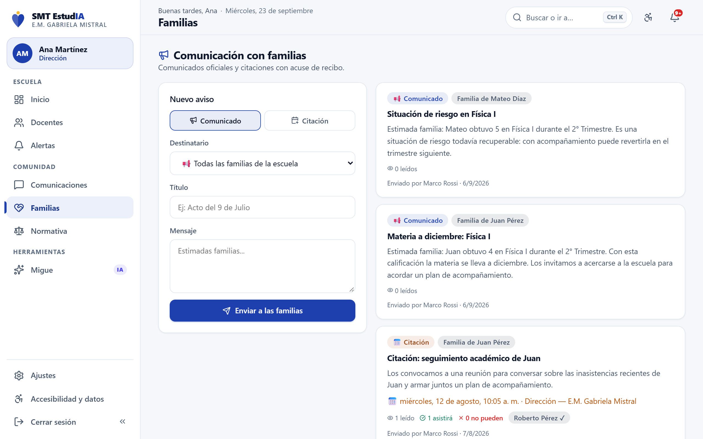
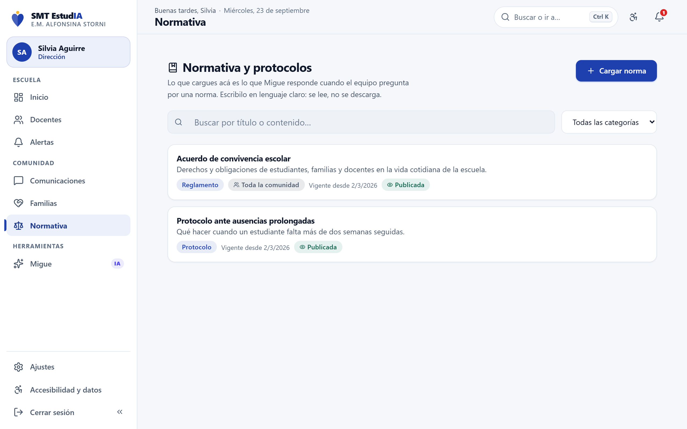
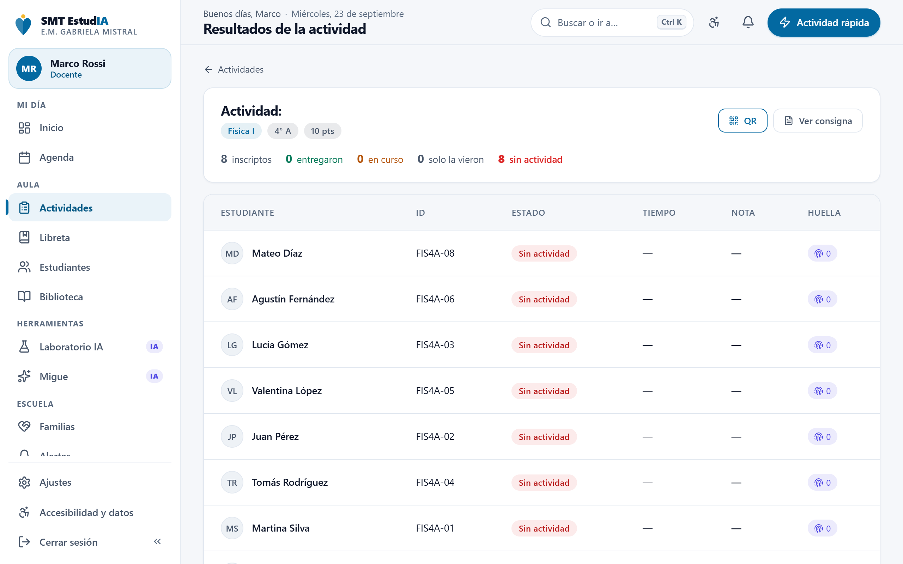
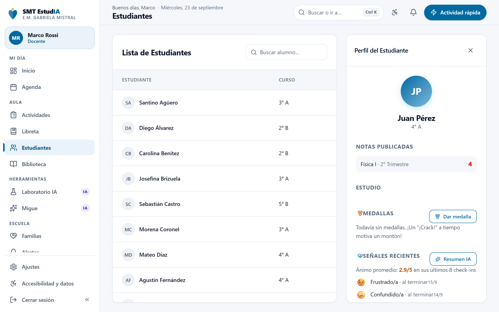
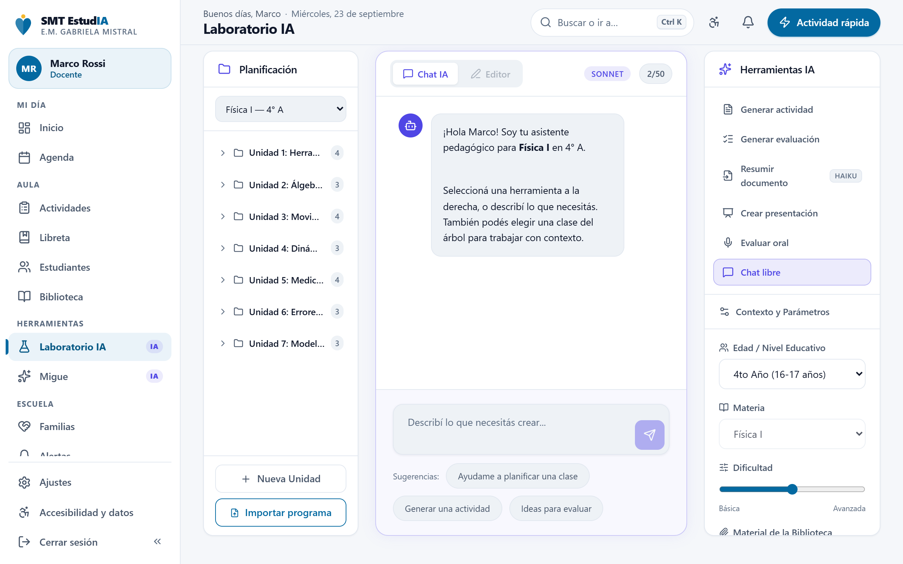
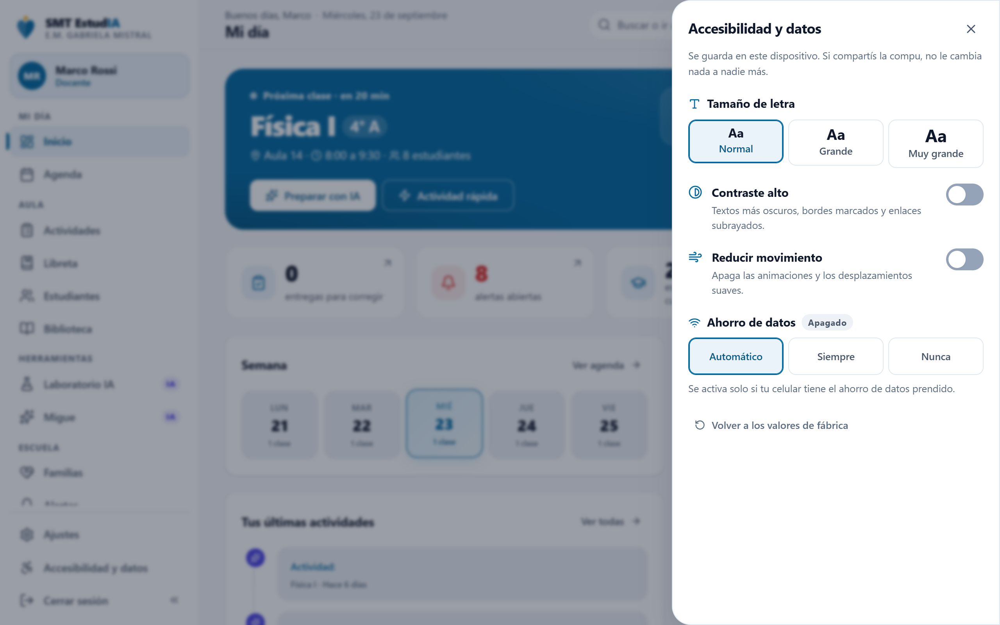

SMT EstudIA
La plataforma con inteligencia artificial de las escuelas municipales de San Miguel de Tucumán: para gestionar la escuela, enseñar mejor y acompañar a cada estudiante.
Gestión eficiente del establecimiento
IA segura para docentes y estudiantes
Trazabilidad del rendimiento y del bienestar
Clase en vivo con el material del curso
SMT EstudIA · Mi día

Novedades de octubre: clase en vivo con el material del curso, preguntas armadas por la IA, medallas y resumen al terminar · biblioteca que lee PDF escaneados y Word y muestra todo sin descargar · gestión de escuelas y cuentas por DNI · consumo de IA a la vista.
Dirección de Inteligencia ArtificialMunicipalidad de San Miguel de Tucumán
Documento de funcionalidadesOctubre de 2026 · prueba piloto
01Qué es
Una sola plataforma para toda la escuela
SMT EstudIA reúne en un mismo lugar lo que hoy está repartido entre cuadernos, planillas, grupos de WhatsApp y la memoria de cada docente: qué se enseña, cómo le va a cada chico, cómo se siente y qué hace la escuela cuando algo no anda bien. Está en prueba piloto en 2° A de la E.M. Alfonsina Storni y 3° A de la E.M. Gabriela Mistral, con el material real de cada curso, y cada escuela ve solo sus propios datos.
Cinco miradas sobre los mismos datos
Cada persona entra con su usuario y ve solo lo que le corresponde. La pantalla toma el color de su rol: en una computadora compartida se ve enseguida de quién es la sesión abierta.
Dirección
Tablero con seis indicadores, mapa de riesgo, alertas que se siguen, familias, normativa y la gestión de su escuela.
Docentes
Su día ordenado, actividades en un minuto, libreta, biblioteca, clase en vivo con su material y herramientas de IA.
Estudiantes
Lo que tienen que entregar, práctica con IA, material para leer sin descargar, la clase en vivo en el celular y Migue.
Familias
Comunicados y citaciones, las notas y el temario de sus hijos, y avisos a tiempo cuando una materia necesita refuerzo.
Administración
La Municipalidad da de alta escuelas, cursos y cuentas, y ve cuánto se usa y cuánto cuesta la IA.
Tres ejes
Gestión eficiente
La dirección conoce el estado de la escuela sin pedir informes: los números se arman solos con lo que pasa cada día, y las alertas se siguen hasta cerrarse.
IA segura
Ayuda a planificar, practicar, preguntar en clase y consultar protocolos, con reglas escritas: no hace la tarea, no inventa normas y no guarda secretos cuando un chico está en riesgo.
Trazabilidad
Cada nota, aviso a una familia, señal de bienestar, clase en vivo e intervención queda asentada con fecha, autor y resultado.
Pensada para la escuela realFunciona en celulares con pocos datos y sigue andando sin conexión en lo que ya se abrió. Se lee con letra grande o contraste alto, se usa completa con teclado y no tiene publicidad ni rastreadores.
Contenido
Dirección · El tablero3
Dirección · Dónde mirar primero4
Dirección · Alertas que no se pierden5
Dirección · Familias y normativa6
Docentes · Mi día y Actividad rápida7
Docentes · Libreta y regla 5/48
Docentes · Resultados y fichas9
Docentes · Biblioteca y material NUEVO10
Clase en vivo · Cómo funciona NUEVO11
Clase en vivo · El material de la clase NUEVO12
Clase en vivo · Medallas y resumen NUEVO13
Inteligencia artificial con límites14
Estudiantes15
Familias16
Bienestar y cuidado17
Administración y consumo de IA NUEVO18
Datos y seguridad19
Accesibilidad y ahorro de datos20
Resumen, funcionalidad por funcionalidad21
SMT EstudIA · Documento de funcionalidades2
02Dirección · El tablero
El estado de la escuela en una pantalla
La directora abre SMT EstudIA y ve cómo está su escuela sin pedir un solo informe. Los indicadores se calculan con lo que pasa en la plataforma —entregas, notas, check-ins, comunicados— y se actualizan solos.
Tablero de dirección

Los seis indicadores
1En riesgo
Porcentaje de estudiantes con dos o más señales a la vez: entregas vencidas, puntajes bajos, check-ins negativos, días sin actividad o alertas sin atender.
2Cobertura curricular
Cuántas de las clases planificadas en el programa ya se dieron, por materia y por curso.
3Pulso de bienestar
Proporción de check-ins emocionales positivos de la semana. Con menos de cinco respuestas no muestra porcentaje: con tan pocos datos engañaría.
4Adopción docente
Docentes que usaron la plataforma en los últimos 14 días, y la lista de quiénes necesitan acompañamiento.
5Respuesta de familias
Qué parte de los comunicados se leyó y cuántas citaciones se respondieron dentro de las 72 horas.
6Latencia de devolución
Cuánto tarda, en la mediana, una entrega en volver corregida al estudiante.
Detrás de cada número, los nombres"Ver detalle" despliega quiénes están detrás del indicador —qué estudiantes, qué materias, qué docentes— y un clic lleva a la ficha del curso. El número sirve para decidir por dónde empezar, no para quedarse en el promedio.
Parte del díaArriba del tablero, lo que pasó en las últimas 24 horas: alertas escaladas y nuevas, check-ins negativos, entregas recibidas y las citaciones de las próximas 48 horas. Con "Redactar con IA" se convierte en un texto para compartir con el equipo.
SMT EstudIA · Documento de funcionalidades3
02Dirección · Dónde mirar primero
Del mapa de la escuela a la ficha de cada curso
El tablero dice cuánto; el mapa dice dónde. Y la ficha del curso muestra, estudiante por estudiante, qué está pasando y qué hay pendiente.
Mapa institucional
Una grilla que cruza cada curso con cada materia. El color de cada celda marca dónde está el problema: rojo donde hay más estudiantes en riesgo, verde donde el curso va bien, gris donde todavía no hay datos. Tres vistas: riesgo académico, cobertura del programa y entregas.
Mapa curso × materia: ahí donde aparece rojo conviene mirar primero. Un clic en una celda abre la ficha del curso.
Del número al nombre
El "En riesgo" abierto: la lista de estudiantes, con su curso y cuántas señales tiene cada uno.
Ficha del curso

1Nómina con estado real
Cada estudiante con su estado según las señales que registra la plataforma, y su promedio de las notas publicadas en el trimestre.
2Avance del programa
Por materia, cuántas clases del programa se dieron: se ve a tiempo si un curso se atrasa.
3Lo pendiente
Entregas sin corregir, notas del trimestre, materias que van a diciembre y alertas abiertas.
Equipo docente

Equipo docente
Por cada docente: sus materias, clases de hoy, cantidad de estudiantes y su última actividad real en la plataforma. La dirección acompaña a quien lo necesita y puede dejarle un reconocimiento que el docente ve en su inicio.
Bitácora de accesosCada vez que alguien abre la ficha de un estudiante queda registrado quién y cuándo.
SMT EstudIA · Documento de funcionalidades4
02Dirección · Alertas
Alertas que no se pierden
Cuando algo le pasa a un chico, la plataforma no se limita a avisar: sigue el caso hasta que alguien lo resuelve, y si nadie lo toma, sube a la dirección.
Señalnota, check-in, silencio
→
Abiertallega al docente
→
En seguimientocon nota de lo que hizo
→
Cerradacon resultado
·
Escala a direcciónnadie la toma en 72 h
El ciclo de una alerta. Nace sola, alguien la toma, deja escrito qué hizo y la cierra con un resultado. Si queda sin tocar más allá del plazo que fijó la escuela, escala.
Alertas · vista del docente (la dirección ve las de toda la escuela)

1Se generan solas
Por notas en la franja de riesgo, por check-ins negativos repetidos, por las señales de Migue y por abandono silencioso: un estudiante que no aparece hace 14 días. Esta última se revisa todos los días.
2Tienen dueño y resultado
Quien interviene la pasa a seguimiento y deja escrito qué hizo. Al cerrarla elige el resultado: resuelta, derivada a un equipo externo o cerrada sin cambios.
3Escalan
Cada hora, la plataforma busca alertas que llevan más de 72 horas sin atención y las sube a la dirección, marcadas como escaladas.
4Umbrales propios
Cada escuela decide cuándo avisar: la nota de riesgo y la de desaprobación, los días sin actividad (de 3 a 60), los check-ins negativos y las horas para escalar (de 12 a 336).
SMT EstudIA · Documento de funcionalidades5
02Dirección · Comunidad
Comunicación con familias y normativa de la escuela
La escuela le escribe a las familias desde la plataforma y sabe quién leyó y quién confirmó. Y sus reglamentos y protocolos dejan de ser un PDF que nadie encuentra.
Comunicación con familias

1Comunicados
A todas las familias de la escuela o a la de un estudiante en particular. Cada uno muestra cuántas familias lo leyeron.
2Citaciones
Con fecha, hora y lugar. La familia responde "Asistiré" o "No puedo" desde el celular, y la escuela lo ve al instante.
3Avisos automáticos
Cuando una nota entra en riesgo, el aviso a la familia sale solo, con el nombre de la materia.
4Comunicaciones internas
La dirección también escribe al equipo docente, y queda registrado quién lo leyó.
Normativa y protocolos

Normativa y protocolosLa dirección escribe sus reglamentos y protocolos en la plataforma, en lenguaje claro, ordenados por categoría (reglamento, protocolo, circular) y con buscador. Esa normativa es la que usa Migue para responderle al equipo: la escuela escribe el protocolo una vez y el asistente lo responde siempre, citando de dónde sale.
También en el celular. Los indicadores pasan a dos columnas y el menú queda abajo, al alcance del pulgar.
SMT EstudIA · Documento de funcionalidades6
03Docentes · Mi día y Actividad rápida
El día del docente, ordenado
Al entrar, el docente ve lo que tiene ahora y lo que tiene pendiente. Y puede crear y publicar una actividad para su curso en un minuto, desde la computadora o desde el celular.
1Ahora y lo que sigue
La clase en curso o la próxima, con cuenta regresiva ("en 20 min"), aula y cantidad de estudiantes, y la línea de todas las clases del día, según el horario del curso.
2Contadores que llevan a la tarea
Entregas para corregir, alertas abiertas, estudiantes y clases de la semana: cada número abre la pantalla donde se resuelve.
3Lo que llega de la escuela
Avisos de dirección, reconocimientos al docente y sus notas rápidas.
Actividad rápida

1Cuatro pasos marcados
Curso, tema, preguntas y publicar. Arriba se ve qué está hecho y qué falta.
2El tema sale del programa
"Lo que sigue en tu programa" sugiere las clases que todavía no se dieron: un toque y la IA arma la actividad con ese tema.
3Así la ven tus estudiantes
A la derecha, la actividad tal como les va a llegar. Se puede editar antes de publicar, o escribirla a mano.
4Cuestionario y QR
La IA propone preguntas que se corrigen solas. Al publicar aparece un QR para proyectar en el aula: el estudiante lo escanea y cae directo en la actividad.
SMT EstudIA · Documento de funcionalidades7
03Docentes · Libreta
La libreta del trimestre y la regla 5/4
El docente carga las notas del trimestre en un solo lugar. Al publicarlas, la plataforma hace el resto: avisa a la familia, registra quién se lleva la materia y actualiza el tablero de dirección.
Libreta del trimestre

Docentepublica la nota
→
Regla 5 / 4umbrales que fija cada escuela
→
≤ 5 · Aviso a la familiamientras todavía se puede levantar
→
≤ 4 · Va a diciembrequeda asentado y dirección lo ve
→
Siempre · Tableroindicadores y mapa al día
Un solo gesto del docente dispara todo lo demás. Si después corrige la nota hacia arriba, el aviso se desdice y la alerta se cierra sola.
Nota sugerida
La plataforma calcula una nota con las entregas corregidas del trimestre. El docente decide: la acepta, la cambia o la deja en blanco.
Temario y criterios
En la misma libreta, cada unidad se ubica en un trimestre y los criterios de evaluación se publican, para que estudiantes y familias sepan qué se da y cómo se evalúa. Sin trimestre, la unidad queda en borrador.
Clases grabadas
El docente pega un link de YouTube, Drive o Meet y lo cuelga del tema del temario al que corresponde. Los videos de YouTube se ven en su modo de privacidad.
SMT EstudIA · Documento de funcionalidades8
03Docentes · Resultados y fichas
Qué aprendieron, qué les costó, cómo están
Cada actividad deja información útil para la próxima clase, y cada estudiante tiene una ficha con todo lo que se sabe de él en un solo lugar, en vez de en la cabeza de cada docente.
Resultados de la actividad

1Quién entregó y cómo le fue
Estado de cada estudiante, puntaje del cuestionario autocorregible y devolución del docente, con reacciones rápidas de un toque.
2Qué les costó
Por pregunta, cuántos acertaron: se ve qué tema conviene retomar. La huella digital muestra cuándo la abrieron y cuánto tiempo le dedicaron.
Estudiantes · ficha

La ficha del estudiante
- Notas publicadas en la libreta, por materia y trimestre.
- Check-ins emocionales recientes y observaciones del equipo docente: la información que antes quedaba en la cabeza de cada uno.
- Medallas, nivel de estudio y racha en el Modo Estudio.
- Familias vinculadas y citación directa desde la ficha.
- Resumen con IA para la reunión con la familia, armado solo con datos reales de la plataforma.
Buscar o ir a cualquier lado
Con Ctrl K (o la lupa en el celular) se busca una pantalla, un estudiante, un curso o un ajuste de lectura. Encuentra aunque se escriba sin tildes: "juan perez" encuentra a Juan Pérez. El docente solo encuentra a los estudiantes de sus cursos.
SMT EstudIA · Documento de funcionalidades9
03Docentes · Biblioteca y material Nuevo
El material se sube una vez y rinde para todo
El docente sube su apunte —un Word, un PDF digital o páginas escaneadas del libro— y la plataforma lee el texto. Desde ahí salen el resumen, las placas de estudio, el podcast, el uso en el Laboratorio IA y la clase en vivo. Y se ve dentro de la plataforma, sin descargar nada.
Sube el materialWord, PDF o video
→
Se lee el textoal instante, o con IA si es un escaneo
→
"Texto listo"o el motivo y "Reintentar"
→
Rinde para todoplacas, podcast, IA Lab, en vivo
Biblioteca docente · maqueta
La poesía y los recursos poéticos
Lengua2,7 MB · PDF escaneadoTexto listo
VerResumen IACrear placasCrear podcastUsar en IA LabEn vivo
Secuencia: Persuasión y palabra poética
Lengua140 KB · WordTexto listoCompartido
VerPlacas (12)PodcastEn vivo
Guía de lectura — unidad 2
Lengua5,1 MB · PDF escaneadoNo se pudo leer
La lectura con IA no llegó a terminar (se cortó la conexión). Probá de nuevo.
VerReintentar
Maqueta de la pantalla, con datos de ejemplo.
1Lee cualquier apunte
Un Word o un PDF digital se leen en el navegador, al instante y sin gastar IA. Si el PDF es un escaneo, la IA transcribe las páginas.
2Nunca falla en silencio
Si algo no se pudo leer, la tarjeta dice por qué en palabras simples y ofrece "Reintentar", sin volver a subir el archivo.
3Ver, no descargar
"Ver" abre el material en la plataforma: el PDF página por página (también en el celular), el Word con su formato, el video de YouTube embebido. El docente tiene aparte "Descargar".
4Placas y podcast
La IA arma placas para repasar en el celular —conceptos, tarjetas para dar vuelta y preguntas— y un podcast de 2 a 3 minutos para escuchar con auriculares.
Se ve igual en cualquier pantalla
Antes, en muchos celulares el PDF no se veía y se descargaba solo. Ahora la plataforma dibuja cada página, así que el estudiante lee el apunte —incluso un escaneo de 8 páginas— sin bajar nada y sin salir de la app. El Word se muestra con sus títulos, listas, tablas e imágenes, y el texto queda disponible para buscar o copiar una cita.
Armar móduloEl docente escribe un tema o elige uno de su planificación, y la IA arma el módulo completo: de ahí salen las placas, el podcast, una actividad para entregar y una pregunta para lanzar en la clase en vivo.
Compartido con criterioCada material se comparte con los estudiantes de la materia cuando el docente quiere. Para trabajarlo en una clase no hace falta compartirlo para siempre: la clase en vivo lo muestra solo mientras dura.
SMT EstudIA · Documento de funcionalidades10
04Clase en vivo · Cómo funciona Nuevo en el documento
La clase de siempre, con el celular como forma de participar
El docente da su clase como siempre y, cuando lo necesita, lanza una actividad desde la compu, la tablet o el celular. Los estudiantes responden desde su celular y todos ven los resultados crecer en vivo. Sin instalar nada y con muy pocos datos.
Clase en vivo · panel del docente · maqueta
Lengua · 2° A
InvitadosProyectarEmojisTerminar
En la sala · 18/24 conectadosGrupos (4)Medalla
Abril S.Benjamín R.Camila H.Dante I.Emilia P.Felipe O.Guadalupe V.+ 11
✅ Pregunta rápida17/24 respondieron
¿Qué es la rima consonante?
Coinciden vocales y consonantes desde la última vocal acentuada12
Coinciden solo las vocales4
No hay coincidencia de sonidos1
Revelar respuestaCerrar actividad
+ Lanzar actividad
💙 Check-in¿Cómo vienen?
✅ Pregunta rápidacon una correcta
📊 Encuestaopinión del curso
🧩 Multi-selecciónvarias opciones
☁️ Nube de palabrascrece en pantalla
💬 Respuesta libreideas y dudas
Maqueta de la pantalla, con nombres y datos de ejemplo.
Clase en vivo🔔
Lengua · 2° A
Tus respuestas son anónimas para tus compañeros
✅ Pregunta rápida
¿Qué es la rima consonante?
Coinciden vocales y consonantes desde la última vocal acentuada
Coinciden solo las vocales
No hay coincidencia de sonidos
Podés cambiarla hasta que se cierre
👏 💡 😮 🔥 🐢 ❓
"Más despacio" y "No entiendo" le llegan al docente
Mi escuelaEstudiarMaterialesMigue
En el celular del estudiante. Aparece sola cuando el docente la lanza.
Proyectar · maqueta
K7P4Q2Escaneá o tipeá el código
¿Qué es la rima consonante?
17 de 24 respondieron · 18 en la sala
Para la pantalla del aula
Con la notebook conectada al proyector, "Proyectar" muestra en grande lo que la sala tiene que ver: el QR y el código para entrar mientras no hay actividad, y los resultados creciendo cuando la hay.
Liviana para el celular
Cada respuesta pesa unos pocos cientos de bytes: funciona con datos móviles escasos y sin instalar ninguna app.
1Seis formas de participar
Check-in de cómo vienen, pregunta rápida con respuesta para revelar, encuesta, multi-selección, nube de palabras y respuesta libre.
2Quién está, de verdad
El docente ve quién está conectado y puede mandarle una pregunta a un solo estudiante, o pedir una respuesta por grupo cuando hay pocos celulares.
3A la pantalla del aula
"Proyectar" pone en grande el QR para entrar y los resultados. La sala se puede abrir a invitados sin cuenta, con un código de seis letras.
SMT EstudIA · Documento de funcionalidades11
04Clase en vivo · El material de la clase Nuevo
La clase en vivo trabaja con el material del curso
Al iniciar la clase, el docente elige con qué trabaja hoy: un tema de su temario —con el contenido de la clase— o un material de su biblioteca. Lo proyecta, lo muestra en los celulares y la IA saca preguntas de ahí para lanzar con un toque.
Material de la clase · maqueta
📖 Material de la claseCambiar
¿Qué es la poesía? Palabras que cantan
Tema del temario · Unidad 3
Proyectar✓ Lo ven en los celulares✨ Preguntas con IA
Los estudiantes lo ven solo mientras dure esta clase. Al terminarla, deja de estar disponible.
1. ¿En qué se diferencia un aviso publicitario de un poema?Lanzar
2. ¿Qué caracteriza al verso libre?✓ Lanzada
· No sigue una métrica ni una rima fija (correcta) · Siempre tiene la misma cantidad de sílabas · Repite las mismas palabras en cada verso
3. ¿Qué sentimientos transmite el poema "Viaje"?Lanzar
Maqueta con un tema real del temario de Lengua de 2° A y preguntas de ejemplo.
1Del temario o de la biblioteca
La lista muestra los temas de esa materia y curso —marcados "con contenido" o "solo título"— y los materiales de la biblioteca. Desde la Biblioteca, el botón "En vivo" abre la clase con ese material ya elegido.
2Proyectar
Pantalla completa con letra grande: el contenido del tema, el PDF página por página, el Word o el video, para leer desde el fondo del aula.
3En los celulares, solo durante la clase
Los estudiantes del curso lo abren mientras dura la clase. No queda compartido para siempre —importa con páginas de un libro—: al terminar, se corta. Lo garantiza la base de datos, no la pantalla.
4Preguntas con IA
En unos segundos, la IA arma de 3 a 5 preguntas sobre ese material: opción múltiple con la correcta marcada o respuesta abierta. El docente lanza la que quiere con un toque. Si el tema tiene solo el título, la plataforma lo dice y no inventa.
Clase en vivo🔔
Atendé a la clase 😄 — cuando tu docente lance una actividad, aparece sola acá.
Material de la clase
¿Qué es la poesía? Palabras que cantan
AbrirConsigna 1Leé el poema "Viaje", de Alfonsina Storni. ¿Qué sentimientos transmite? ¿Qué imágenes podés reconocer?
Mi escuelaEstudiarMaterialesMigue
Lo que ve el estudiante
Cuando el docente toca "Mostrar en los celulares", en la pantalla de la clase aparece "Material de la clase · Abrir". Lo puede leer mientras responde una actividad y volver a la consigna cuando quiera.
Al terminar la clase deja de estar disponible: es la forma de trabajar con páginas de un libro sin repartir copias.
SMT EstudIA · Documento de funcionalidades12
04Clase en vivo · Medallas y resumen Nuevo
Reconocer en el momento y saber qué pasó
Durante la clase el docente puede dar medallas —a uno, a varios o a los que acertaron— y el celular del chico lo festeja en el momento. Al terminar, la plataforma arma el resumen de la clase: participación, comprensión, ambiente y un informe escrito por la IA.
Resumen de la clase · maqueta
RESUMEN DE LA CLASELengua · 2° AMartes 14 de octubre, 10:10 · 48 min · 📖 ¿Qué es la poesía? Palabras que cantan
Participaron21/2488% del curso
Se conectaron22/24en sus celulares
Actividades4lanzadas
Medallas5🌟 🧠 🙋
✨ Informe de la clase
Qué se vio. La poesía y sus recursos a partir de "Viaje", de Alfonsina Storni.
Participación. 21 de 24 participaron. Abril, Dante y Guadalupe respondieron todo. No participaron Emilia, Ian y Juana: conviene acercarse sin señalarlos.
Comprensión. La rima consonante quedó clara (71% acertó). El verso libre costó más (45%): conviene retomarlo con ejemplos.
Ambiente. En el check-in la mayoría vino "Bien"; hubo 3 "más despacio" a mitad de clase.
Actividades
✅ ¿Qué es la rima consonante?17 respondieron · 12 acertaron (71%)
✅ ¿Qué caracteriza al verso libre?20 respondieron · 9 acertaron (45%)
☁️ Una palabra para el poema19 respondieron
No participaron (3): Emilia Paz, Ian Molina, Juana Ledesma.
Maqueta con nombres y datos de ejemplo.
Premiar a los que acertaron (12) · maqueta
🌟¡Crack!Te la re bancaste
✨Aura +1Subiste tu aura
🧠¡Qué genio!Respuesta brillante
🙋Siempre presenteParticipación
☑ Abril Sosa☑ Dante Ibáñez☑ Guadalupe Vera☐ Felipe Ortiz+ 9
Dedicatoria: "por cómo explicaron la rima"Dar a 12
🌟
¡Recibiste «¡Crack!»!
De Paula Medina · Te la re bancaste
"Por cómo leíste el poema en voz alta"
¡Gracias!
El festejo en el celular. La medalla suma experiencia y queda en su perfil.
1Premiar a los que acertaron
Al revelar una pregunta, un botón abre el diálogo de medallas con los que eligieron la correcta ya marcados.
2El resumen se arma solo
Duración y material, quiénes se conectaron y participaron, cada pregunta con sus aciertos, el ánimo del check-in, los emojis y las medallas.
3Informe con IA
Un texto corto con qué se vio, quiénes participaron, qué quedó claro y qué retomar, y sugerencias para la próxima clase. Usa solo los datos de la clase y queda guardado.
4Clases anteriores
Desde el inicio de Clase en vivo se vuelve al resumen de cualquier clase.
De una clase a la siguienteEl resumen muestra qué pregunta costó más y quién no participó: es el punto de partida de la clase siguiente, sin que el docente tenga que tomar nota mientras da clase. Y como queda guardado, se puede volver a mirar cuando se arma el temario o se prepara una reunión.
SMT EstudIA · Documento de funcionalidades13
05Inteligencia artificial
Inteligencia artificial con límites claros
La IA de SMT EstudIA ayuda, no reemplaza. Prepara, resume, propone y responde; las decisiones las toman el docente y el equipo de la escuela. Cada herramienta tiene reglas escritas de lo que puede y no puede hacer.
Laboratorio IA

Laboratorio IA del docente
1Del programa a las clases
El docente sube su programa anual en PDF o Word —incluso escaneado— y la IA lo convierte en unidades y clases listas para trabajar.
2Cinco herramientas
Generar una actividad, armar una evaluación, resumir un documento, preparar una presentación y evaluar un oral, con el material de la biblioteca como contexto.
3Y en el resto de la plataforma
Armar módulo, placas y podcast del material, preguntas para la clase en vivo, informe de la clase y resumen para la reunión con la familia.
Migue, el asistente de la escuela
Responde con la normativa que cargó esa dirección y dice de dónde sale ("Consultó: Protocolo ante ausencias prolongadas"). Si no encuentra una norma, lo dice en lugar de inventarla.
Tres Migue en una misma puerta. Al equipo le explica protocolos y circuitos; al estudiante lo ayuda a estudiar y lo escucha; a la familia le orienta sobre convivencia. Qué versión le toca a cada uno lo decide el servidor según el rol, no la pantalla.
50 por díausos de IA por docente, entre el Laboratorio y los documentos
60 por díamensajes a Migue por persona; para estudiantes, cuatro veces más, para que lo que cuenten siempre pase por la alerta
Cada llamadaqueda registrada: quién, cuándo, qué función, qué modelo y cuánto costó
Lo que la IA no hace
- No le hace la tarea al estudiante: le muestra cómo se piensa y lo deja intentar.
- No inventa normas: si no está en la normativa de la escuela, lo dice.
- No promete secreto: si un chico cuenta algo que preocupa, se lo dice y avisa a la escuela.
- No diagnostica ni reemplaza al equipo de orientación.
- No opina del desempeño de un chico cuando habla con su familia.
- No pone notas ni inventa datos: sugiere, y el docente decide qué se publica.
SMT EstudIA · Documento de funcionalidades14
06Estudiantes
Para estudiantes: lo que sigue, a mano
Los chicos usan SMT EstudIA desde el celular, muchas veces con pocos datos. Todo está pensado para eso: lo importante primero, el menú abajo al alcance del pulgar, y lo que ya abrieron sigue andando sin conexión. Entran con su DNI y la clave que les da la escuela.
Lo que sigue. Cuántas actividades le quedan, cuál hacer primero y cuándo vence.
Cómo llega. Al empezar puede decir cómo se siente con un toque. Es opcional y no afecta la nota.
Modo Estudio. Práctica con IA a partir del material de sus materias, racha y logros personales.
Migue. Para entender un tema o para contar cómo está. Avisa desde el principio que no guarda secretos.
Actividades que no se pierden
Lo que escribe se guarda solo mientras trabaja. Si se corta internet, la entrega queda esperando y se envía sola cuando vuelve la señal.
La clase en vivo, en su celular
Cuando su docente abre una clase en vivo, le aparece el aviso para entrar. Responde, manda emojis, abre el material de la clase si el docente lo muestra y recibe sus medallas en el momento.
Material sin descargas
Apuntes, guías y videos se leen dentro de la plataforma —el PDF página por página, también en el celular—, con placas, podcast y guía de repaso hechas por la IA.
Sin ranking
La racha, el nivel y las medallas son personales: nadie se compara con nadie. Las medallas se las dan sus docentes, desde su ficha o en la clase en vivo.
Biblioteca. Practicar, guía, placas o ver: sin descargar nada.
Vocacional. Preguntas simples sobre lo que le gusta hacer.
Orientación vocacional
No es un test que le dice qué estudiar: le muestra por dónde le tira para tener con quién conversarlo. Él decide si lo comparte.
Con el QR del aulaEl docente proyecta el QR de la actividad o de la clase en vivo; el estudiante lo escanea y cae directo ahí. Si no tenía la sesión abierta, entra una vez y sigue derecho.
Su código en cada materiaCada estudiante tiene un código propio en cada materia (por ejemplo, LEN2A-07), que ve en su inicio.
SMT EstudIA · Documento de funcionalidades15
07Familias
Para las familias: enterarse a tiempo
La familia deja de enterarse en el boletín, cuando ya no hay margen. Recibe los avisos de la escuela en el celular y ve las notas y el temario de sus hijos. Todo lo que ve sale de lo que la escuela publicó. Entra con su DNI.
Comunicados y citaciones. Lo pendiente de confirmar aparece primero.
Mis hijos. El resumen del trimestre, las notas del año y el temario.
1Comunicados
Al abrir un comunicado, la escuela sabe que llegó. No hace falta mandar la nota en el cuaderno y esperar la firma.
2Citaciones
Con día, hora y lugar. La familia confirma "Asistiré" o avisa "No puedo" con un toque.
3Mis hijos
Por cada hijo, el promedio del último trimestre publicado, las materias para reforzar y las que van a diciembre; después, las notas del año y el temario de cada trimestre.
4Avisos a tiempo
Cuando una nota queda en la franja de riesgo, el aviso llega mientras la materia todavía se puede levantar.
5Migue para familias
Orienta sobre las normas de convivencia de la escuela y cómo acompañar, sin opinar sobre el desempeño del hijo.
Docentepublica un 5
→
Avisollega al celular
→
Lo abrequeda el acuse
→
Confirmasi hay citación
→
Direcciónlo ve
Cada paso queda registrado con fecha: la escuela sabe si el aviso llegó, sin llamar a nadie.
Solo datos realesLa plataforma no le muestra a la familia ningún número que no haya cargado la escuela: si todavía no hay notas publicadas, lo dice, en lugar de mostrar un promedio.
SMT EstudIA · Documento de funcionalidades16
08Bienestar y cuidado
El bienestar también deja rastro
Lo que un chico cuenta y preocupa llega a un adulto de la escuela el mismo día. Y lo que el equipo hace con esa información queda registrado, pero separado de lo que el chico puede leer.
El chico escribealgo que preocupa
→
Migue conversaescucha y responde
+
Clasificador aparteno obedece al mensaje
→
Señal al equipocon el motivo y la frase
→
Le avisa al chicosolo si quedó guardada
La alerta emocional. El clasificador corre separado del chat: si el mensaje pide "no le digas a nadie", igual evalúa. Y Migue solo dice "ya avisé" si la señal efectivamente se guardó.
Así la ve el equipo: el motivo, la frase que la disparó y el seguimiento que fueron dejando. El estudiante no ve ese seguimiento.
1Check-in emocional
Una fila de emojis al empezar y al terminar cada actividad, y en la clase en vivo cuando el docente lo lanza. Se puede saltear siempre. Dos check-ins negativos en una semana generan una alerta (la escuela puede ajustarlo).
2Señal derivada de Migue
Si algo de lo que escribe un chico indica riesgo, queda una señal con el motivo para el equipo. Si el clasificador no pudo evaluar, deja una señal "sin clasificar" para que la revise una persona: nunca falla en silencio.
3Seguimiento del equipo
Lo que orientación y los docentes escriben sobre un caso vive aparte de lo que el estudiante puede leer. El chico ve que la escuela lo acompaña; no ve las notas internas.
4Pulso en el tablero
Dirección ve cómo se sienten los cursos esta semana, sin exponer a nadie: el porcentaje aparece recién con suficientes respuestas.
Quién ve qué del bienestar de un chico
| El estudiante | Su familia | Sus docentes | Dirección | Administración |
|---|
| Check-ins emocionales | Los suyos | No | Sí | Sí | No |
| Señal derivada de Migue | La suya | No | Sí | Sí | No |
| Seguimiento del caso | No | No | Sí | Sí | No |
| Conversación con Migue | La suya | No | No | Solo la frase que motivó la señal | No |
SMT EstudIA · Documento de funcionalidades17
09Administración y consumo de IA Nuevo
Cada escuela se arma desde la plataforma
La Municipalidad da de alta escuelas y cuentas desde la propia plataforma, sin planillas ni pedidos técnicos. Cada dirección gestiona la suya. Y lo que se usa y se gasta en inteligencia artificial está a la vista.
Gestión de la escuela · maqueta
E.M. Alfonsina Storni
Cursos y materiasPersonalEstudiantesFamiliasDatos
Docentes+ Sumar persona
PMPaula Medina
Lengua · 2° A
Asignar materiaNueva clave
RGRocío Gauna
Matemática · 2° A
Asignar materiaNueva clave
MTMartín Toledo
Físico-Química · 2° A
Asignar materiaNueva clave
Cuenta creada: Abril Sosa · 2° A
Usuario: su DNI · Clave inicial: generada por la plataforma · la cambia al entrar
CopiarImprimir para entregar
Maqueta de la pantalla, con nombres de ejemplo.
1Escuelas, cursos y materias
El superadmin crea cada escuela y entra a armarla: cursos, materias, dirección, docentes con sus materias, estudiantes y familias.
2Cuentas por DNI
Al estudiante se lo da de alta con su DNI y su curso; la plataforma genera la clave inicial y la pide cambiar al primer ingreso. "Nueva clave" la regenera si alguien la olvida.
3Una persona, varias escuelas
Un docente puede trabajar en dos escuelas, o ser docente en una y director en otra: elige la escuela activa arriba y ve solo lo de esa.
4La dirección gestiona la suya
Desde "Mi escuela", la dirección arma cursos y cuentas de su escuela. No crea directores ni ve otras escuelas.
Consumo de IA · maqueta
💳 Gasto en dinero
HoyUS$ 0,84
Esta semanaUS$ 3,10
Este mesUS$ 9,75
TotalUS$ 21,40
Según el proveedor de IA · tope de la clave: US$ 30,00 por mes · disponible: US$ 20,25
Maqueta con cifras de ejemplo.
Consumo de IA
El superadmin ve cuánto se gastó en dólares —hoy, en la semana, en el mes y en total— según el propio proveedor de IA, y el tope de gasto de la cuenta.
Usos y tokens por día, por escuela y por rol; y el detalle por función y por modelo: chat, Migue, detección de riesgo, documentos, podcast.
Sin exponer a los chicosPor persona aparecen solo docentes y dirección. Estudiantes y familias se ven sumados: cuánto usa Migue un chico dice mucho de él.
Consumo de IA · por función y modelo · maqueta
| Función | Modelo | Llamadas | Tokens | Costo |
|---|
| Laboratorio IA (chat) | claude-sonnet | 214 | 1.180.400 | US$ 4,12 |
| Migue | claude-sonnet | 356 | 842.900 | US$ 2,95 |
| Documentos (lectura, resúmenes, placas) | claude-haiku | 97 | 610.200 | US$ 0,88 |
| Migue · detección de riesgo | claude-haiku | 148 | 96.300 | US$ 0,11 |
| Podcast | voz | 9 | 21.600 caracteres de voz | según plan de voz |
SMT EstudIA · Documento de funcionalidades18
10Datos y seguridad
Datos cuidados
SMT EstudIA maneja datos de chicos y chicas de 13 a 18 años. Por eso la protección no depende de la pantalla: está en la base de datos. Y la plataforma tiene que poder usarla cualquiera, con cualquier celular.
63 / 63tablas con control de acceso en la base de datos, con 195 reglas
2escuelas con datos separados: una docente de una no alcanza los de la otra
12 hdura la sesión del personal: en una compu compartida no queda abierta para el que sigue
0rastreadores, publicidad o analítica de terceros
1Cada uno ve lo suyo
El control de acceso se aplica en la base, no en la pantalla: un estudiante no puede leer datos de otro aunque lo intente. Se prueba cuenta por cuenta, sobre una copia de la base con todas sus reglas.
2Compu compartida
Si entra otra persona en la misma computadora, se borra lo que la anterior dejó guardado. Al cerrar sesión, también. "Cerrar sesión" cierra ese dispositivo y no saca al docente de su celular.
3Sin rastreadores
No hay publicidad, ni analítica de terceros, ni tipografías o librerías cargadas de otros servidores: nadie ajeno a la plataforma sigue lo que hace cada persona.
Entrada · maqueta
 SMT EstudIA
La plataforma de las escuelas municipales de San Miguel de Tucumán.
SMT EstudIA
La plataforma de las escuelas municipales de San Miguel de Tucumán.
DirecciónDocentesEstudiantesFamilias
Entrar
Con el usuario y la contraseña que te dio la escuela.
Email o DNITu email, o tu DNI si sos estudiante
Contraseña
Entrar
Una entrada, cuatro colores
1Usuario propio
El personal entra con su email; estudiantes y familias, con su DNI. La clave inicial la genera la plataforma y se cambia al primer ingreso. No hay cuentas compartidas.
2El color dice de quién es
Dirección en azul marino, docentes en azul, estudiantes en violeta, familias en verde. Si una sesión quedó abierta, se nota.
3Salir borra lo guardado
Al cerrar sesión, o cuando vencen las 12 horas del personal, se borra del dispositivo lo que la app guardó para usar sin conexión.
Quién ve qué
| Estudiante | Familia | Docente | Dirección | Otra escuela |
|---|
| Notas publicadas | Las suyas | Las de sus hijos | Las de sus materias | Las de su escuela | Nada |
| Entregas de actividades | Las suyas | No | Las de sus actividades | Las de su escuela | Nada |
| Material de la biblioteca | El compartido de sus materias, y el de la clase en vivo mientras dura | No | El suyo | El de su escuela | Nada |
| Conversaciones con Migue | La suya | La suya | La suya | La suya | Nada |
| Normativa | La dirigida a la comunidad | La dirigida a la comunidad | Toda la publicada | La carga y la edita | Nada |
SMT EstudIA · Documento de funcionalidades19
10Accesibilidad y ahorro de datos
Que la pueda usar cualquiera, con cualquier celular
En la escuela hay chicos con celulares viejos, planes prepagos, dificultades para leer letra chica o que usan lector de pantalla. La plataforma se adapta a cada persona, y cada uno lo elige en su propio dispositivo.
Accesibilidad y datos

1Letra grande o muy grande
Toda la app escala, no solo los títulos.
2Contraste alto
Textos más oscuros, bordes marcados y enlaces subrayados.
3Menos movimiento
Apaga las animaciones; si el celular ya lo pide, se respeta solo.
4Ahorro de datos
Se prende solo si el celular lo tiene activado: baja cada pantalla recién al abrirla y pide confirmación antes de un video.
Letra muy grande. La misma pantalla del estudiante: todo crece junto y nada se corta.
Liviana de verdadCada rol baja solo sus pantallas, y cada una recién cuando se abre. Lo pesado —leer un PDF, mostrar un escaneo— se descarga solo si alguien lo usa. En septiembre, la primera visita de un estudiante bajaba casi la mitad de datos que la versión anterior.
Sin conexiónDesde la primera visita, la plataforma guarda en el dispositivo las pantallas de cada rol. Un estudiante puede seguir trabajando sin señal en lo que ya abrió y entregar: lo que hizo se envía solo cuando vuelve la conexión, y siempre con su propia sesión.
Revisada pantalla por pantalla
Una auditoría automática recorre las pantallas de los cuatro roles, en celular y en computadora, contra los criterios WCAG 2.2 AA: contraste, botones con nombre, campos con etiqueta, títulos en orden y áreas táctiles. Se usa entera con teclado, con foco siempre visible y anuncios de cada cambio de pantalla.
Pensada para el pulgar
Los botones del celular miden al menos 44 píxeles y el menú está abajo, con el nombre de cada sección escrito.
Los números no mientenSi un dato no existe, la pantalla lo dice. Un porcentaje con muy pocas respuestas no se muestra, y nada que la escuela no haya cargado aparece como si fuera real.
SMT EstudIA · Documento de funcionalidades20
11Resumen
Funcionalidad por funcionalidad
Todo lo que hace SMT EstudIA hoy, en una página. Lo nuevo de octubre, en ámbar.
Dirección
- Tablero con seis indicadores y el detalle con nombres.
- Parte del día, con redacción opcional por IA.
- Mapa curso × materia de riesgo, cobertura y entregas.
- Ficha del curso y equipo docente con reconocimientos.
- Alertas con ciclo de vida, escalamiento y umbrales propios.
- Comunicados, citaciones y normativa, con acuse de lectura.
- Mi escuela: cursos, materias y cuentas de su escuela.
Docentes
- Mi día, Actividad rápida con QR y resultados con "qué les costó".
- Libreta con nota sugerida y regla 5/4; temario y criterios.
- Ficha del estudiante con observaciones y resumen IA.
- Biblioteca que lee Word, PDF y escaneos, y muestra todo sin descargar.
- Placas, podcast y Armar módulo desde el material.
Clase en vivo
- Seis actividades, presencia real, pregunta dirigida, grupos y emojis.
- Proyector e invitados con código de seis letras.
- Material de la clase: proyectarlo y mostrarlo en los celulares mientras dura.
- Preguntas con IA desde el material, con un toque.
- Medallas en vivo y resumen con informe al terminar.
Inteligencia artificial
- Laboratorio IA: programa anual a clases y cinco herramientas.
- Migue con tres caras y la normativa de la escuela, citada.
- Clasificador de riesgo separado del chat.
- Uso medido: topes diarios y registro de cada llamada.
Estudiantes
- Mis actividades con autoguardado y entrega sin conexión.
- Check-in emocional opcional; Modo Estudio sin ranking.
- Biblioteca, orientación vocacional y Migue.
- Clase en vivo en el celular, con el material y las medallas.
Familias
- Comunicados y citaciones con confirmación.
- Mis hijos: resumen, notas del año y temario.
- Avisos automáticos cuando la nota todavía se puede levantar.
- Migue para dudas de convivencia.
Administración
- Escuelas, cursos, materias y cuentas desde la plataforma.
- Alta por DNI con clave inicial y una persona en varias escuelas.
- Consumo de IA: gasto en dólares, usos y detalle por función.
Para todos
- Control de acceso en la base de datos, por escuela y rol.
- Color por rol y limpieza en computadoras compartidas.
- Sesión de 12 h para el personal; cerrar sesión por dispositivo.
- Accesibilidad, liviana y sin conexión, sin publicidad ni rastreadores.
En una fraseSMT EstudIA no digitaliza la escuela: la conecta. El trabajo que los docentes ya hacen —planificar, evaluar, dar clase, acompañar— queda a la vista de quien lo necesita, cuando lo necesita. Dirección ve el conjunto, la familia deja de enterarse tarde, y ningún chico depende de que alguien se acuerde.
Capturas tomadas en la plataforma con cuentas y datos de demostración (septiembre de 2026). Las pantallas nuevas de octubre se muestran como maquetas con datos de ejemplo.
SMT EstudIA · Dirección de Inteligencia Artificial · Municipalidad de San Miguel de Tucumán21